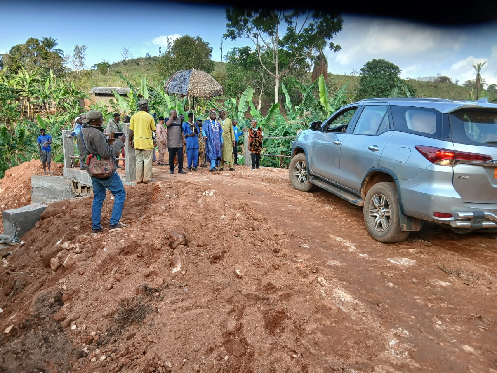
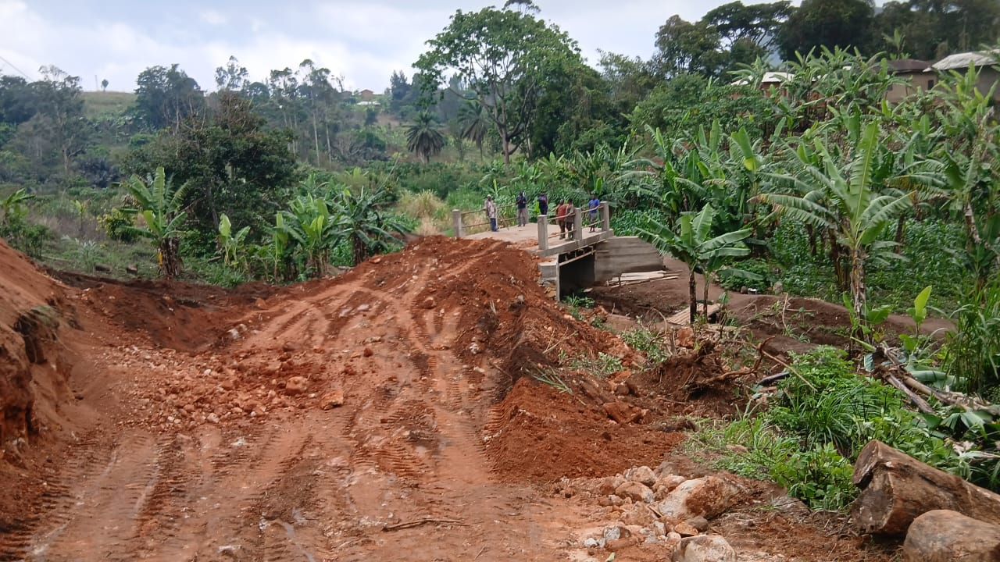
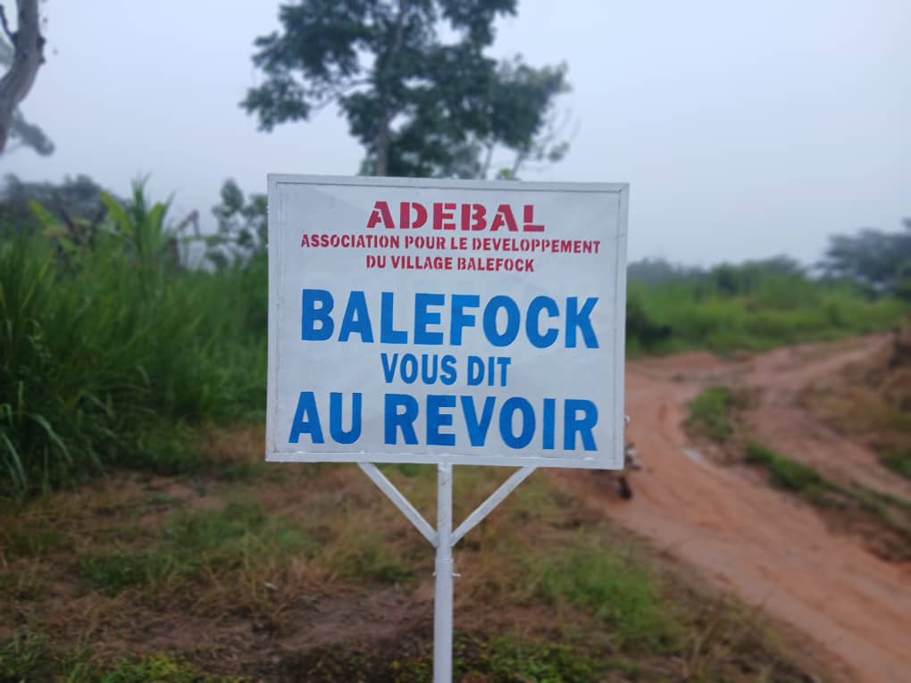
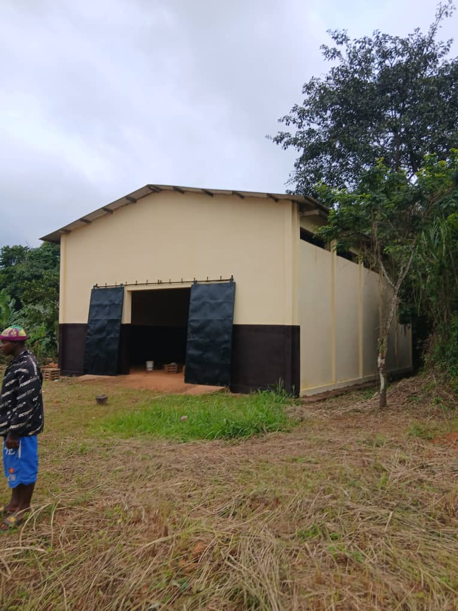
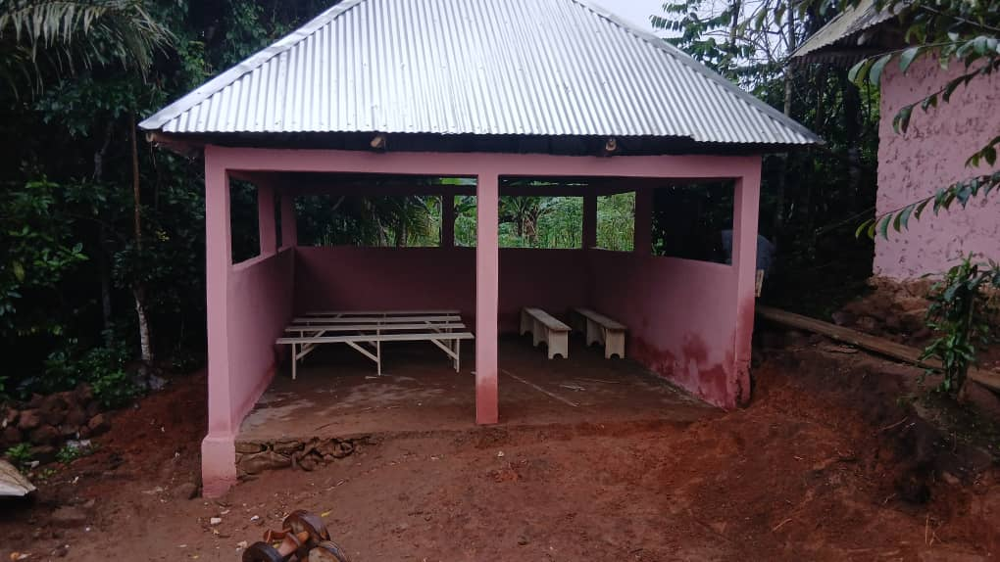

Infrastructure
Travaux du Pont de Nkong
Renforcer l’accès et la circulation grâce à un ouvrage plus sûr et plus durable.
DécouvrirADEBAL mobilise les filles et fils de Balefock autour de projets utiles, visibles et durables pour renforcer les infrastructures, la vie communautaire et l’avenir du village.


Notre mission est de coordonner les initiatives économiques, sociales et culturelles pour faire avancer Balefock, soutenir les projets structurants et valoriser les forces de la communauté.

Renforcer l’accès et la circulation grâce à un ouvrage plus sûr et plus durable.
Découvrir
Réhabiliter un lieu utile aux échanges, aux réunions et aux activités communautaires.
Découvrir
Créer un espace d’accueil structuré pour les rassemblements et les grands événements.
DécouvrirADEBAL suit plusieurs chantiers prioritaires afin d’améliorer le cadre de vie et la mobilité locale.
Les membres renforcent la coordination et les contributions pour soutenir les actions de développement.
Les initiatives locales associent mémoire, identité culturelle et amélioration des infrastructures.